Data Specialist & Software Developer
Informatics Engineering student with hands-on experience in data analytics, AI/ML development, and full-stack web systems. Skilled at turning complex data into actionable insights and building scalable applications for institutional use.
Tools and technologies I use to build, analyze, and deliver data-driven and software solutions.
A curated selection of projects spanning AI, data analytics, and full-stack web development.
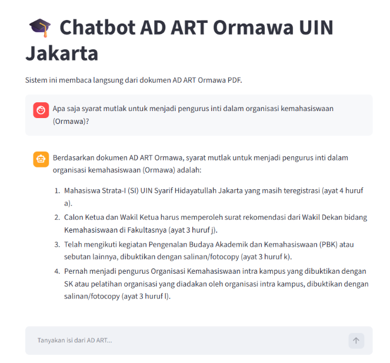
AI Chatbot to help student organizations understand the AD ART regulations of UIN Jakarta through natural language queries.
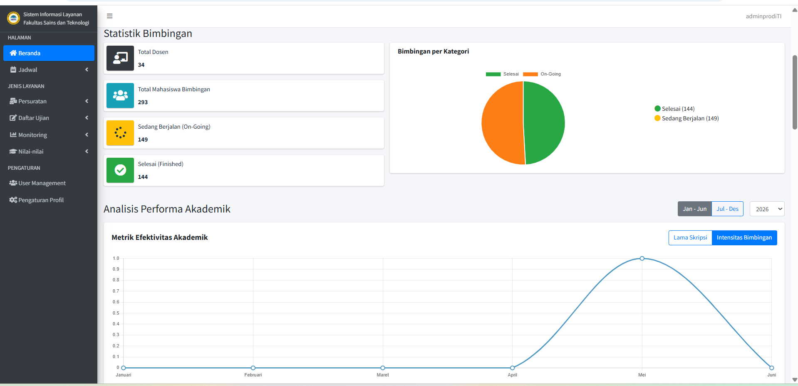
Real-time faculty dashboard to monitor thesis completion progress, supervisor load distribution, and graduation status.
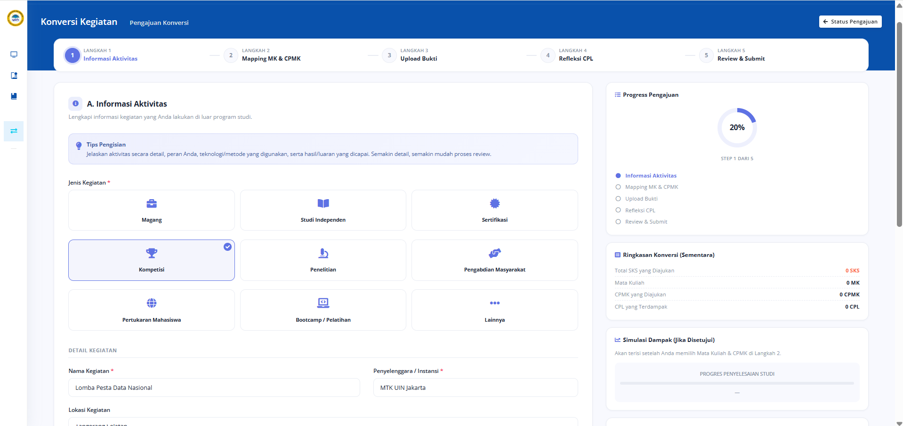
MBKM activity recognition system allowing students to convert off-campus activities into academic credits via approval workflow.
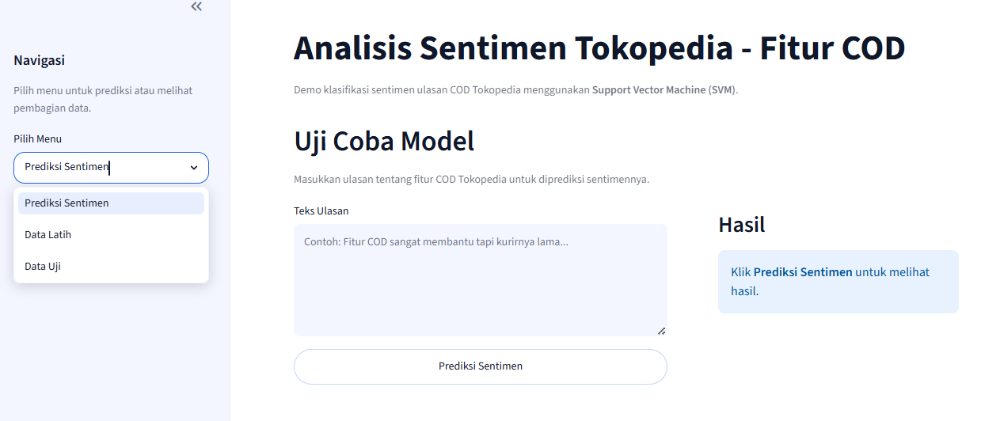
End-to-end NLP pipeline to scrape, clean, and classify 1,477 user reviews using an optimized SVM model with SMOTE balancing.
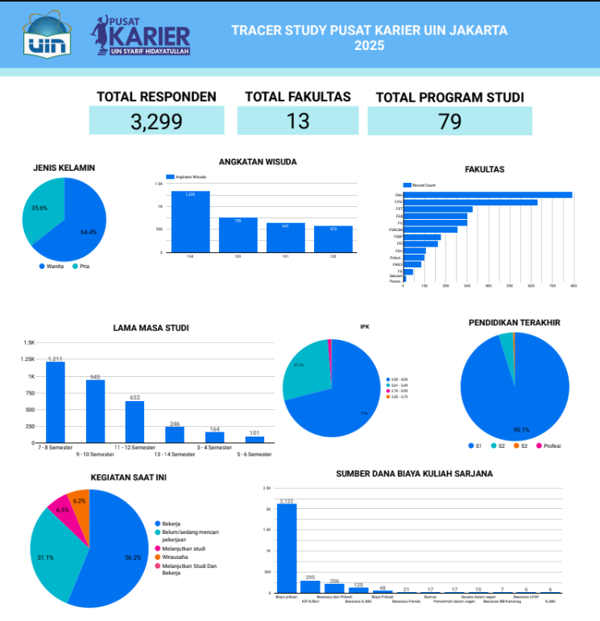
Comprehensive BI dashboard visualizing 3,299 alumni survey responses across 13 faculties, delivered to the UIN Jakarta rector.
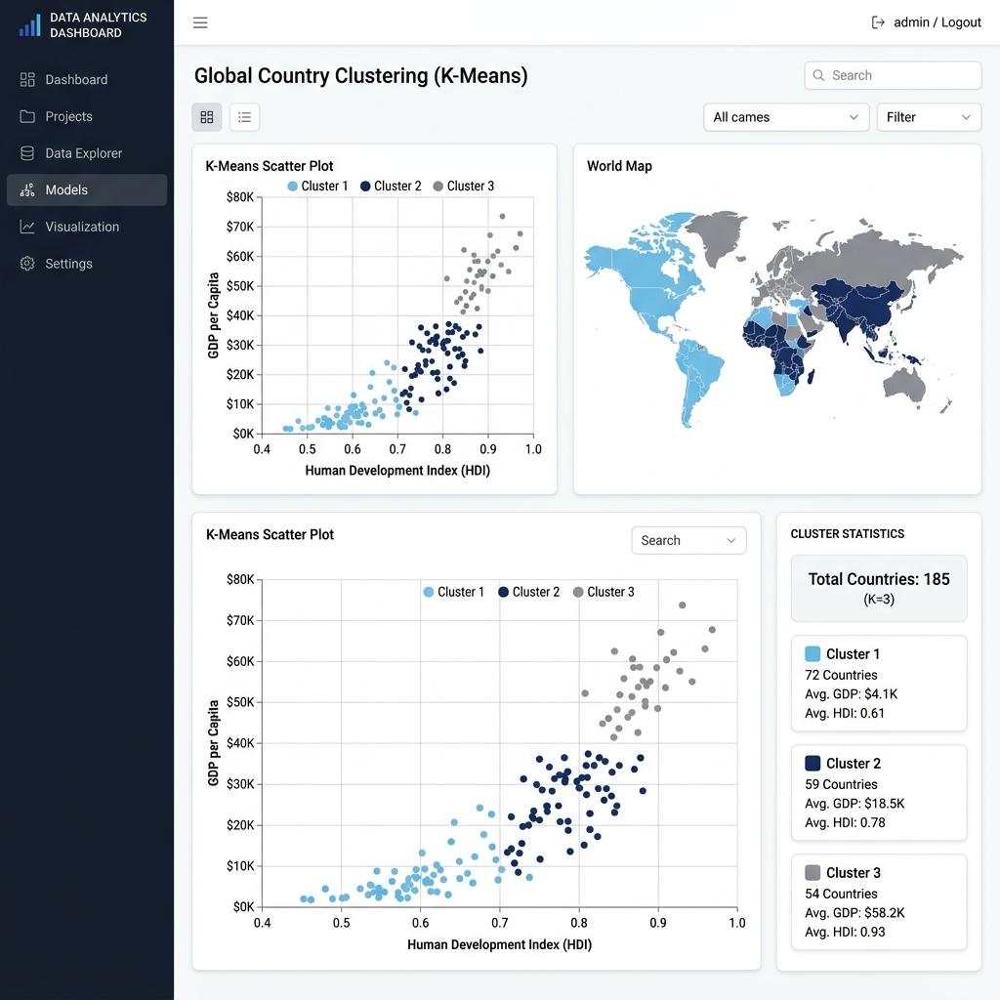
Applied K-Means clustering to demographic and economic data to identify countries in urgent need of humanitarian assistance.
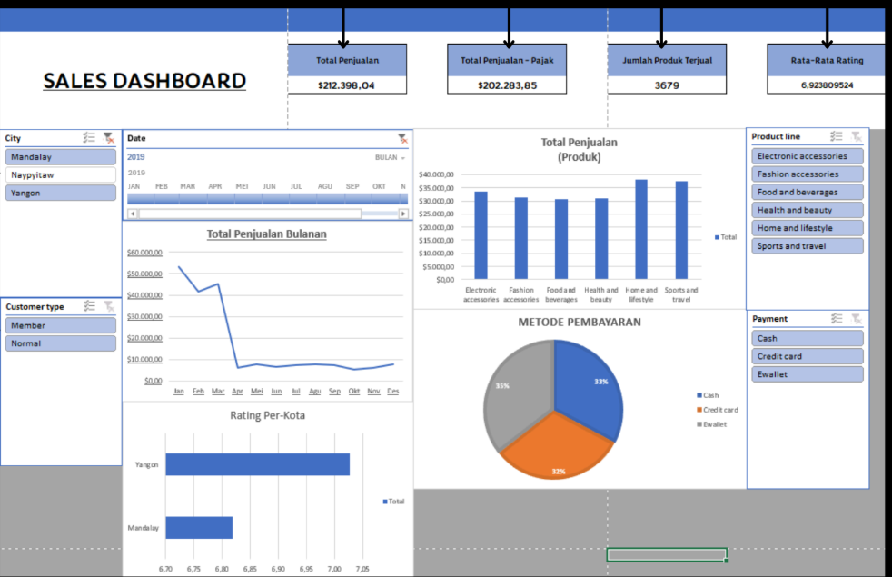
Excel dashboard analyzing $212K+ in sales across 3 cities, 6 product categories, and 3 payment methods — featuring dynamic slicers, monthly trend lines, and KPI summaries.
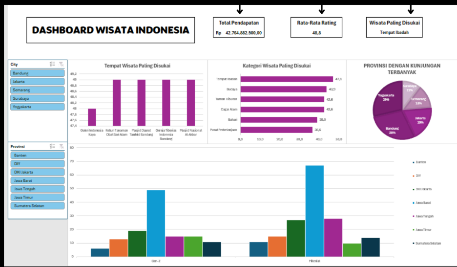
Excel dashboard visualizing Rp 42.7B+ in tourism revenue across Indonesian provinces, tracking visitor preferences by category, rating, and generational segment with dynamic filters.
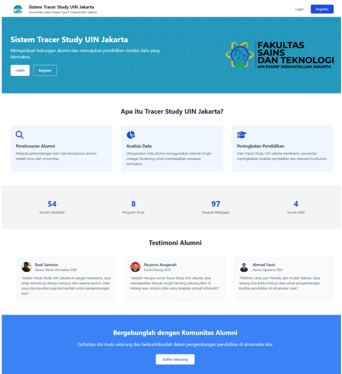
Full-stack alumni tracking system for UIN Jakarta with alumni registration, survey management, admin approval workflow, and K-Means clustering analysis on alumni data.
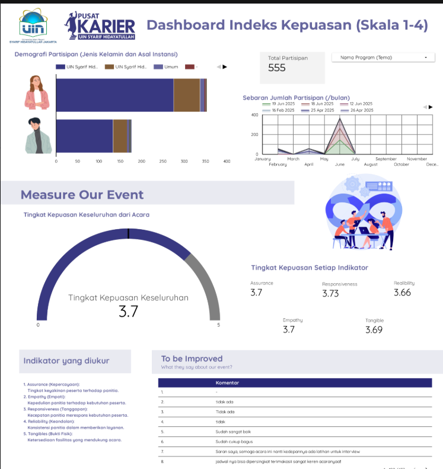
Comprehensive BI dashboard measuring event satisfaction index for Pusat Karier UIN Jakarta. Analyzes responses from 555 participants across 5 core indicators.
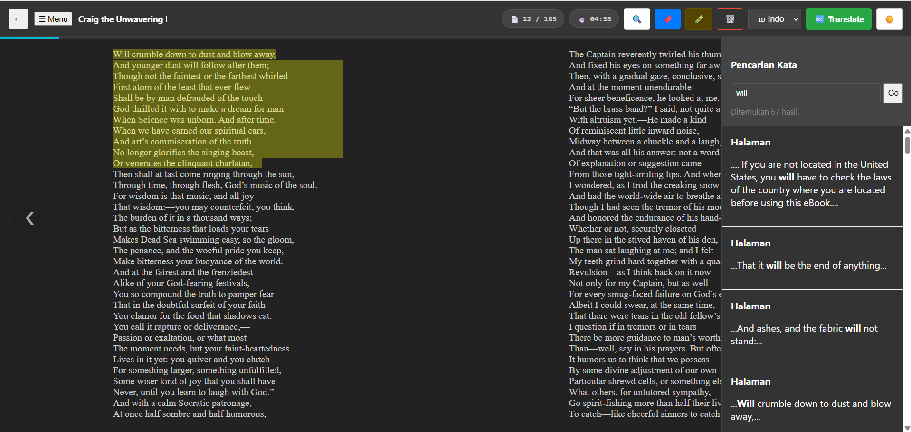
Web-based digital library app for reading ePub files. Features an integrated e-reader, persistent text highlighting, cross-language translation via API, and book uploading.